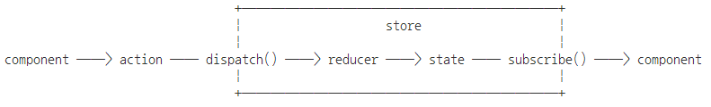

redux란?
Redux is a pattern and library for managing and updating application state, using events called "actions".
Redux는 상태 관리 라이브러리다.
Redux는 상태 관리를 컴포넌트 외부로 분리.
Redux는 Store에 상태 저장.
상태 저장을 컴포넌트 state 에서 store 로 이동.
리덕스 3원칙
진실은 하나의 소스로부터(Single source of truth)
==>
상태는 읽기 전용이다(State in read-only)
==>
변화는 함수로 한다(Changes are made with function)
==>
redux는 왜 사용하나?
state를 컴포넌트에서 독립시키기 위해서
redux를 사용하면 state down/ state up 지옥 탈출
redux는 컴포넌트에 종속되지 않고, 상태관리를 컴포넌트 바깥에서 합니다.
redux는 store라는 곳에 state를 저장하고,
컴포넌트는 store를 구독하고
state가 바뀌면 해당 state를 바라보고 있는 컴포넌트는 모두 리렌더링 됩니다.
#props -> props -> props 지옥 탈출
우리가 원하는 state가 자식의 자식의 자식에서 사용한다면 props을 내리고 또 내리고 또 내리죠.
또 그 state를 바꾸기 위한 함수를 또 내리고 ..내리고....내립니다.
이렇게 되면 내가 잘 하고 있는지 의문이 들게 되고, 코딩을 실수 하게 됩니다.
위에서 본 대로, redux의 store는 프로젝트 루트레벨에 위치하고, 해당 store를 구독하는 컴포넌트는 모두 state와 state를 바꾸는 함수를 받을 수 있습니다.
어느 위치에 있든 상관 없이 단 한번에 상태를 받을 수 있게 됩니다!
redux를 언제 사용하나?
redux는 기본적으로 flux 패턴을 따릅니다
Action -> Dispatch -> Store -> View(Component)
Redux 구성 요소
1. state : 상태값이 저장되는 순수 객체다.
2. reducer : reducer는 store에 들어갈 state와 state를 바꿀 함수를 정의하는 곳입니다.
3. store :
4. action : 순수 객체다. 기본적으로 CRUD 를 정의한다.
Redux 주요 메서드
1. Redux.createStore(reducer, preloadedState, enhancer)
2. Redux.combineReducers(reducers)
여러 reducer를 하나로 묶어주는 메소드. store에는 오직 1개의 리듀서만 설정 가능합니다.
Store 주요 메서드
1. store.dispatch(action) : store에 이벤트 발생시키기
2. store.getState() : store에 상태값 가져오기
3. store.replaceReducer(nextReducer) : store reducer 바꾸기
4. store.subscribe(listener) : store 상태값 구독하기
Redux 코딩 순서
0. Redux 플러그인 추가 or import.
1. state 만들기
2. reducer 만들기
3. store 만들기
4. action 만들기
5. store 구독하기
6. store에 action dispatch 하기
Redux 와 같이 사용되는 라이브러리
redux : flux 기반의 상태 관리 라이브러리
react-redux : react에서 redux를 사용할 수있게 하는 라이브러리
redux-actions : redux용 action을 정의하기 위한 라이브러리
redux-logger : 로깅 처리를 위한 미들웨어
redux-thunk : 비동기 작업의 미들웨어. 추천
redux-saga : 비동기 작업의 미들웨어
axios : 비동기 호출 라이브러리
redux-devtools-extension : 스토어의 상태를 개발자 도구에서 조회 할 수 있는 크롬 확장 프로그램
redux-toolkit :
redux 패키지 설치
npm install --save redux react-redux redux-saga immer redux-devtools-extension redux-logger